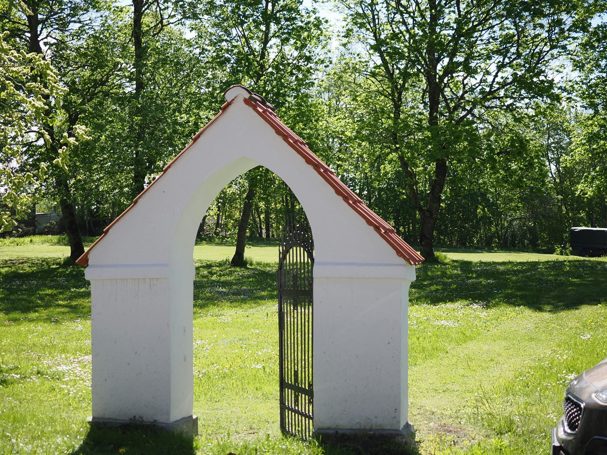
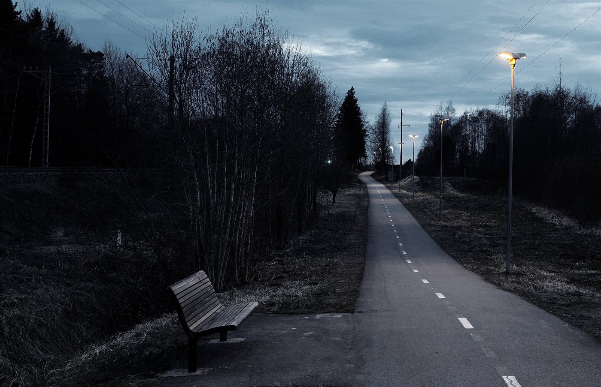

mina@arvuti: ~/portfoolio
bash
Viimane sisselogimine: täna, 09:41:07
███╗ ███╗ █████╗ ██████╗ ██╗
████╗ ████║██╔══██╗██╔══██╗██║
██╔████╔██║███████║██████╔╝██║
██║╚██╔╝██║██╔══██║██╔══██╗██║
██║ ╚═╝ ██║██║ ██║██║ ██║██║
╚═╝ ╚═╝╚═╝ ╚═╝╚═╝ ╚═╝╚═╝
~ $ whoami
Mari Mets
veebiarendaja · disainer · kohvijooja
Ehitan asju, mis töötavad brauseris ja näevad head välja ka siis, kui internet on aeglane. Viimased kolm aastat olen teinud veebilehti, väikeseid rakendusi ja ühte liiga ambitsioonikat mänguprojekti.
~ $ cat kontakt.txt
- asukoht Tallinn, Eesti
- e-post mari@example.com
- GitHub github.com/marimets
- saadaval jah, uutele projektidele
~ $ ls -la projektid/
drwxr-xr-x
päevik/
isiklik päevik, mis näeb välja nagu 2005
2026
drwxr-xr-x
kohvik/
väike kohviku menüü ja broneerimisleht
2025
drwxr-xr-x
mang/
brauserimäng, millel on liiga palju reegleid
2025
drwxr-xr-x
katsetused/
siin elavad asjad, mis kunagi ei valmi
2024
~ $ cat oskused.txt
HTML & CSS
92%
JavaScript
78%
Figma
64%
Kannatlikkus
41%
~ $ ls -la pildid/



~ $ ./praegu.sh
- Õpin: kuidas CSS-grid päriselt töötab
- Ehitan: ühte väikest veebipoodi
- Kuulan: vanu videomängu heliribasid
~ $ echo $TERE_TULEMAST
Kui tahad midagi ehitada või lihtsalt tere öelda, kirjuta julgelt. Vastan tavaliselt ühe tööpäeva jooksul.
~ $